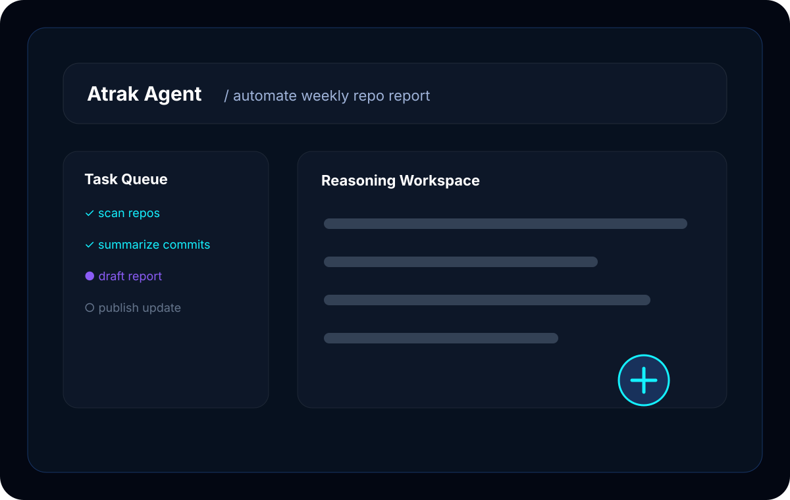

Atrak Agent
OS-level AI assistant for macOS and Windows that integrates multiple LLMs and APIs to automate tasks, manage workflows, and boost productivity—all running locally on your machine.
🎯 The Problem
Modern knowledge workers spend hours on repetitive tasks: scheduling, file management, research, and context-switching between apps. AI assistants exist, but they're cloud-only and lack deep OS integration.
Most AI tools require constant internet and send all your data to external servers.
Chat interfaces can't control your desktop, open apps, or manage files directly.
Every new session forgets your workflows, preferences, and ongoing projects.
👥 Users & Impact
Target Users
- Developers wanting AI-assisted coding and automation
- Researchers managing large knowledge bases
- Power users automating repetitive workflows
- Teams needing local-first AI for sensitive work
🎬 Demo
Agent Preview
Command bar + task queue workflow
Preview of the local-first desktop automation flow.
Interface Preview
🚀 How to Run
Join Alpha Testing
- Fill out the access request form
- We'll review and send you a download link
- Install and configure your API keys
- Join our feedback channel for updates
Alpha builds are available for macOS and Windows. Linux is planned.
🏗️ Architecture
┌─────────────────────────────────────────────────────────────┐
│ Atrak Agent │
├─────────────────────────────────────────────────────────────┤
│ │
│ ┌──────────────┐ ┌──────────────┐ ┌──────────────┐ │
│ │ Command │───▶│ Router │───▶│ LLM Pool │ │
│ │ Parser │ │ (intent) │ │ (GPT/Claude│ │
│ └──────────────┘ └──────────────┘ │ /Local) │ │
│ └──────────────┘ │
│ │ │ │
│ ▼ ▼ │
│ ┌──────────────┐ ┌──────────────┐ ┌──────────────┐ │
│ │ Plugin │◀──▶│ Safety │◀──▶│ Response │ │
│ │ System │ │ Layer │ │ Handler │ │
│ └──────────────┘ └──────────────┘ └──────────────┘ │
│ │
├─────────────────────────────────────────────────────────────┤
│ OS Layer: File I/O │ Process Control │ Clipboard │ Shell │
└─────────────────────────────────────────────────────────────┘
Tech Stack
✨ Key Features
Quick Command Bar
Global hotkey summons an AI-powered command interface from anywhere.
Smart LLM Routing
Automatically picks the best model for each task—fast for simple, powerful for complex.
Plugin System
Extend with custom tools: calendar, email, code runners, web scrapers, and more.
Safety Constraints
Configurable guardrails prevent destructive actions without confirmation.
Context Memory
Remembers your projects, preferences, and ongoing tasks across sessions.
Local-First
Your data stays on your machine. API calls are minimal and can use local models.
Cross-Platform
Designed to run on both macOS and Windows with the same workflow and UI.
📊 Metrics & Results
Development Notes
Currently in alpha testing with 5 internal users on macOS and Windows. Focus is on stability and core workflow coverage before expanding to Linux.
🗺️ Roadmap
Command parsing, LLM integration, basic file operations
Extensible tools, calendar/email integration
Stable release, documentation, onboarding flow
Linux support, local LLM optimization
🙏 Credits
Charlie Han
Atrak Team
OpenAI, Anthropic, Ollama
Python + Electron
Inspired by the vision of truly helpful AI assistants that respect user privacy and agency.